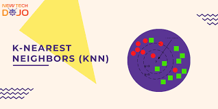

In this project we optimize Microsoft Power BI dashboard with a focus on usability, performance, flexibility, and standardization.This project provides a detailed view of the business operations of the superstore, including information on the products sold, the customers who purchase them, and the sales performance across different regions and categories.


This project uses visualization to provides insight on the different types data science job title, their salaries and the most in demand job title.

This project analyzes the demographic and economic information for each county in the United States in 2015

In this project, I used the MYSQL database to analyze the sales of house properties in a city in Australia.

Tableau dashboard analyzing the traffic in Wikipedia pages in 2016.

This is a machine learning project where K-NEAREST NEIGHBORS(KNN) classifier was used to predict future patients as those that have chronic kidney disease or does not have chronic kidney disease based on their blood test results.

This is a linear regression project that focuses on Adelie and Chinstrap Penguins,as these particular species has been in decline.

In this project, I use python to analyze Airbnb listings as a qualitative and quantitative data and Tableau to visualize Airbnb New York listings and review.